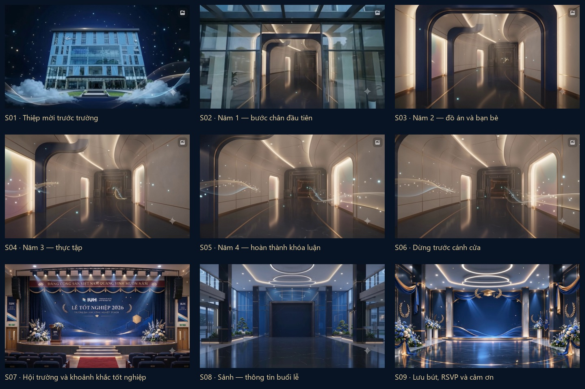
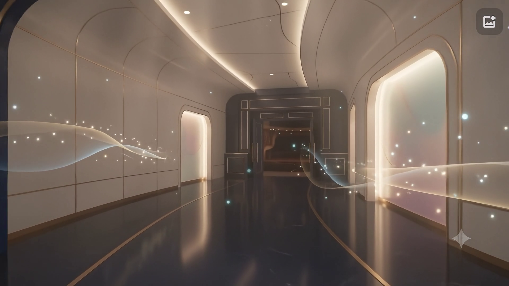

GRADUATION / PRODUCTION HANDOFF · 14.11.2026Chuẩn bị video.
Để mỗi nhịp cuộn dẫn một chặng.
Đây là bộ tạo tài nguyên cho bản thiết kế tiếp theo. Camera di chuyển khi cuộn; đến nơi thì camera giữ nguyên và môi trường tiếp tục sống. Nón 3D, ảnh thật, card, chữ và form thuộc lớp web riêng.
Bắt đầu nhỏ: S01 + S02 + T01
Tạo nền thiệp mời, nền Năm 1 và đoạn bay nối hai nơi. Chỉ khi ba clip này giữ đúng kiến trúc, camera và góc nhìn thì mới tạo 14 clip còn lại. Các prompt phía dưới copy độc lập, không phải sửa tên biến.
Hai loại video, hai quy tắc
Nền: ảnh đầu và ảnh cuối là cùng REFERENCE.png, camera cố định, hiệu ứng chuyển động tiến liên tục, xuất nguyên bản 8 giây.
Di chuyển: chọn FIRST_FRAME.png và LAST_FRAME.png đúng hai ô. Nguồn 8 giây có đoạn di chuyển tập trung khoảng giây 2.5–4.5. Nhịp web 0.9–1.4 giây sẽ được cắt/retime sau khi duyệt; không tăng tốc cả clip 8x.
Chọn 16:9, 1080p nếu có; 720p đủ cho vòng pilot. Nếu giao diện không có điều khiển ảnh cuối, chưa tạo hàng loạt đoạn nối. Ảnh đánh dấu chữ trong STORYBOARD chỉ để xem; upload các PNG gốc trong thư mục, không upload collage.

9 điểm dừng · video nền đứng tại chỗ

S01 · PILOTThiệp mời trước trường
Lời mời và khung ảnh thật của Minh.
Chữ bên trái, khung ảnh bên phải; để giữa trống cho lối tiến vào trường.Ảnh upload · Hướng dẫn
01_STOPS/S01_INVITATION/OUTPUT/S01_AMBIENT.mp4Prompt Veo · copy
8-second locked-off background shot. Use REFERENCE.png as the exact first frame. Where first/last-frame conditioning is available, use the SAME image as the final frame. A formal, premium Vietnamese university graduation invitation environment. Preserve the supplied architectural identity, framing, materials, perspective, navy-blue and warm-gold palette. This is an empty background plate for an interactive website. All portraits, memory photographs, captions, buttons, 3D characters and the traveling graduation cap will be composited separately by the website. Keep the central vertical 32 percent visually legible for a mobile portrait crop. Keep existing architectural lettering fixed; introduce no new lettering or decorations. Silent visual plate; consistent exposure, restrained highlights, clean edges, a dignified atmosphere.
Camera: fixed tripod at the supplied optical center and lens setting for all eight seconds. Architecture, perspective, framing and focus are stationary. Animate ONLY the atmosphere: Very slow soft cloud drift at the lower edges; sparse warm gold motes; a restrained flowing light ribbon outside the central building facade. Atmospheric elements move smoothly forward in time at a calm natural speed. Compose a cyclic atmospheric motion whose final state joins the first; keep the environment alive throughout, rather than moving the camera or freezing most of the shot. Hold the same geometry and door state at every frame. The floor, walls, ceiling, building and signage remain registered to the first frame. Maintain enough clean negative space for later HTML overlays.
Negative prompt riêng

S02 · PILOTNăm 1 — bước chân đầu tiên
Một card Năm 1, dùng ảnh cá nhân riêng.
Card trái trên desktop; card dưới trên mobile. Giữ lối vào ở giữa thông thoáng.Ảnh upload · Hướng dẫn
01_STOPS/S02_MEMORY_YEAR_1/OUTPUT/S02_AMBIENT.mp4Prompt Veo · copy
8-second locked-off background shot. Use REFERENCE.png as the exact first frame. Where first/last-frame conditioning is available, use the SAME image as the final frame. A formal, premium Vietnamese university graduation invitation environment. Preserve the supplied architectural identity, framing, materials, perspective, navy-blue and warm-gold palette. This is an empty background plate for an interactive website. All portraits, memory photographs, captions, buttons, 3D characters and the traveling graduation cap will be composited separately by the website. Keep the central vertical 32 percent visually legible for a mobile portrait crop. Keep existing architectural lettering fixed; introduce no new lettering or decorations. Silent visual plate; consistent exposure, restrained highlights, clean edges, a dignified atmosphere.
Camera: fixed tripod at the supplied optical center and lens setting for all eight seconds. Architecture, perspective, framing and focus are stationary. Animate ONLY the atmosphere: Sparse suspended gold dust and delicate moving light reflections in the side glass; quiet atmospheric motion, never entering deeper into the corridor. Atmospheric elements move smoothly forward in time at a calm natural speed. Compose a cyclic atmospheric motion whose final state joins the first; keep the environment alive throughout, rather than moving the camera or freezing most of the shot. Hold the same geometry and door state at every frame. The floor, walls, ceiling, building and signage remain registered to the first frame. Maintain enough clean negative space for later HTML overlays.
The far door must stay CLOSED. It never opens in this ambient clip. Door opening belongs to a separate transition.
Negative prompt riêng

S03 Năm 2 — đồ án và bạn bè
Một card Năm 2; không hiển thị đồng thời cả bốn card.
Card bên phải, cửa và hướng đi ở giữa.Ảnh upload · Hướng dẫn
01_STOPS/S03_MEMORY_YEAR_2/OUTPUT/S03_AMBIENT.mp4Prompt Veo · copy
8-second locked-off background shot. Use REFERENCE.png as the exact first frame. Where first/last-frame conditioning is available, use the SAME image as the final frame. A formal, premium Vietnamese university graduation invitation environment. Preserve the supplied architectural identity, framing, materials, perspective, navy-blue and warm-gold palette. This is an empty background plate for an interactive website. All portraits, memory photographs, captions, buttons, 3D characters and the traveling graduation cap will be composited separately by the website. Keep the central vertical 32 percent visually legible for a mobile portrait crop. Keep existing architectural lettering fixed; introduce no new lettering or decorations. Silent visual plate; consistent exposure, restrained highlights, clean edges, a dignified atmosphere.
Camera: fixed tripod at the supplied optical center and lens setting for all eight seconds. Architecture, perspective, framing and focus are stationary. Animate ONLY the atmosphere: A few slow golden particles drifting across the corridor edges; gentle changes in existing reflected light on the floor, with stationary architecture. Atmospheric elements move smoothly forward in time at a calm natural speed. Compose a cyclic atmospheric motion whose final state joins the first; keep the environment alive throughout, rather than moving the camera or freezing most of the shot. Hold the same geometry and door state at every frame. The floor, walls, ceiling, building and signage remain registered to the first frame. Maintain enough clean negative space for later HTML overlays.
The far door must stay CLOSED. It never opens in this ambient clip. Door opening belongs to a separate transition.
Negative prompt riêng

S04 Năm 3 — thực tập
Một card Năm 3 và câu chuyện thực tập.
Card trái, nhấn chiều sâu của hành lang phía sau.Ảnh upload · Hướng dẫn
01_STOPS/S04_MEMORY_YEAR_3/OUTPUT/S04_AMBIENT.mp4Prompt Veo · copy
8-second locked-off background shot. Use REFERENCE.png as the exact first frame. Where first/last-frame conditioning is available, use the SAME image as the final frame. A formal, premium Vietnamese university graduation invitation environment. Preserve the supplied architectural identity, framing, materials, perspective, navy-blue and warm-gold palette. This is an empty background plate for an interactive website. All portraits, memory photographs, captions, buttons, 3D characters and the traveling graduation cap will be composited separately by the website. Keep the central vertical 32 percent visually legible for a mobile portrait crop. Keep existing architectural lettering fixed; introduce no new lettering or decorations. Silent visual plate; consistent exposure, restrained highlights, clean edges, a dignified atmosphere.
Camera: fixed tripod at the supplied optical center and lens setting for all eight seconds. Architecture, perspective, framing and focus are stationary. Animate ONLY the atmosphere: A restrained translucent gold light current along the side wall and sparse drifting dust; all door and wall edges remain perfectly stationary. Atmospheric elements move smoothly forward in time at a calm natural speed. Compose a cyclic atmospheric motion whose final state joins the first; keep the environment alive throughout, rather than moving the camera or freezing most of the shot. Hold the same geometry and door state at every frame. The floor, walls, ceiling, building and signage remain registered to the first frame. Maintain enough clean negative space for later HTML overlays.
The far door must stay CLOSED. It never opens in this ambient clip. Door opening belongs to a separate transition.
Negative prompt riêng

S05 Năm 4 — hoàn thành khóa luận
Card Năm 4 khép lại phần hành trình.
Card phải; cửa cuối đường vẫn còn đóng.Ảnh upload · Hướng dẫn
01_STOPS/S05_MEMORY_YEAR_4/OUTPUT/S05_AMBIENT.mp4Prompt Veo · copy
8-second locked-off background shot. Use REFERENCE.png as the exact first frame. Where first/last-frame conditioning is available, use the SAME image as the final frame. A formal, premium Vietnamese university graduation invitation environment. Preserve the supplied architectural identity, framing, materials, perspective, navy-blue and warm-gold palette. This is an empty background plate for an interactive website. All portraits, memory photographs, captions, buttons, 3D characters and the traveling graduation cap will be composited separately by the website. Keep the central vertical 32 percent visually legible for a mobile portrait crop. Keep existing architectural lettering fixed; introduce no new lettering or decorations. Silent visual plate; consistent exposure, restrained highlights, clean edges, a dignified atmosphere.
Camera: fixed tripod at the supplied optical center and lens setting for all eight seconds. Architecture, perspective, framing and focus are stationary. Animate ONLY the atmosphere: Subtle warm celebratory sparkles at the outer margins and soft existing light movement on the floor; the far door remains closed and still. Atmospheric elements move smoothly forward in time at a calm natural speed. Compose a cyclic atmospheric motion whose final state joins the first; keep the environment alive throughout, rather than moving the camera or freezing most of the shot. Hold the same geometry and door state at every frame. The floor, walls, ceiling, building and signage remain registered to the first frame. Maintain enough clean negative space for later HTML overlays.
The far door must stay CLOSED. It never opens in this ambient clip. Door opening belongs to a separate transition.
Negative prompt riêng

S06 Dừng trước cánh cửa
Một câu chuyển ý ngắn và gợi ý cuộn tiếp.
Không card; để cửa ở giữa hoàn toàn rõ.Ảnh upload · Hướng dẫn
01_STOPS/S06_CLOSED_DOOR/OUTPUT/S06_AMBIENT.mp4Prompt Veo · copy
8-second locked-off background shot. Use REFERENCE.png as the exact first frame. Where first/last-frame conditioning is available, use the SAME image as the final frame. A formal, premium Vietnamese university graduation invitation environment. Preserve the supplied architectural identity, framing, materials, perspective, navy-blue and warm-gold palette. This is an empty background plate for an interactive website. All portraits, memory photographs, captions, buttons, 3D characters and the traveling graduation cap will be composited separately by the website. Keep the central vertical 32 percent visually legible for a mobile portrait crop. Keep existing architectural lettering fixed; introduce no new lettering or decorations. Silent visual plate; consistent exposure, restrained highlights, clean edges, a dignified atmosphere.
Camera: fixed tripod at the supplied optical center and lens setting for all eight seconds. Architecture, perspective, framing and focus are stationary. Animate ONLY the atmosphere: Faint gold dust crossing the foreground and a subtle steady warm glow around the closed door frame; the door remains fully shut for the entire shot. Atmospheric elements move smoothly forward in time at a calm natural speed. Compose a cyclic atmospheric motion whose final state joins the first; keep the environment alive throughout, rather than moving the camera or freezing most of the shot. Hold the same geometry and door state at every frame. The floor, walls, ceiling, building and signage remain registered to the first frame. Maintain enough clean negative space for later HTML overlays.
The far door must stay CLOSED. It never opens in this ambient clip. Door opening belongs to a separate transition.
Negative prompt riêng

S07 Hội trường và khoảnh khắc tốt nghiệp
Tiêu đề ngắn; chibi 3D nếu giữ sẽ là lớp riêng.
Để trung tâm sân khấu trống cho nhân vật 3D; chữ ở vùng an toàn.Ảnh upload · Hướng dẫn
01_STOPS/S07_CEREMONY/OUTPUT/S07_AMBIENT.mp4Prompt Veo · copy
8-second locked-off background shot. Use REFERENCE.png as the exact first frame. Where first/last-frame conditioning is available, use the SAME image as the final frame. A formal, premium Vietnamese university graduation invitation environment. Preserve the supplied architectural identity, framing, materials, perspective, navy-blue and warm-gold palette. This is an empty background plate for an interactive website. All portraits, memory photographs, captions, buttons, 3D characters and the traveling graduation cap will be composited separately by the website. Keep the central vertical 32 percent visually legible for a mobile portrait crop. Keep existing architectural lettering fixed; introduce no new lettering or decorations. Silent visual plate; consistent exposure, restrained highlights, clean edges, a dignified atmosphere.
Camera: fixed tripod at the supplied optical center and lens setting for all eight seconds. Architecture, perspective, framing and focus are stationary. Animate ONLY the atmosphere: Soft existing stage light beams and sparse elegant dust motes; a stable stage, podium, curtains and all existing signage, without strobing or a confetti storm. Atmospheric elements move smoothly forward in time at a calm natural speed. Compose a cyclic atmospheric motion whose final state joins the first; keep the environment alive throughout, rather than moving the camera or freezing most of the shot. Hold the same geometry and door state at every frame. The floor, walls, ceiling, building and signage remain registered to the first frame. Maintain enough clean negative space for later HTML overlays.
Negative prompt riêng

S08 Sảnh — thông tin buổi lễ
Lịch, địa điểm và chỉ đường bằng HTML thật.
Khối thông tin gọn; nền yên để đọc và thao tác.Ảnh upload · Hướng dẫn
01_STOPS/S08_EVENT_DETAILS/OUTPUT/S08_AMBIENT.mp4Prompt Veo · copy
8-second locked-off background shot. Use REFERENCE.png as the exact first frame. Where first/last-frame conditioning is available, use the SAME image as the final frame. A formal, premium Vietnamese university graduation invitation environment. Preserve the supplied architectural identity, framing, materials, perspective, navy-blue and warm-gold palette. This is an empty background plate for an interactive website. All portraits, memory photographs, captions, buttons, 3D characters and the traveling graduation cap will be composited separately by the website. Keep the central vertical 32 percent visually legible for a mobile portrait crop. Keep existing architectural lettering fixed; introduce no new lettering or decorations. Silent visual plate; consistent exposure, restrained highlights, clean edges, a dignified atmosphere.
Camera: fixed tripod at the supplied optical center and lens setting for all eight seconds. Architecture, perspective, framing and focus are stationary. Animate ONLY the atmosphere: Very restrained moving daylight reflections on the existing glass and polished floor, with a few faint dust particles; quiet formal lighting. Atmospheric elements move smoothly forward in time at a calm natural speed. Compose a cyclic atmospheric motion whose final state joins the first; keep the environment alive throughout, rather than moving the camera or freezing most of the shot. Hold the same geometry and door state at every frame. The floor, walls, ceiling, building and signage remain registered to the first frame. Maintain enough clean negative space for later HTML overlays.
Negative prompt riêng

S09 Lưu bút, RSVP và cảm ơn
Một luồng gửi lời chúc/xác nhận; cảm ơn cá nhân.
Ưu tiên form, không ép cuộn cảnh khi đang gõ hoặc đọc.Ảnh upload · Hướng dẫn
01_STOPS/S09_WISHES_RSVP/OUTPUT/S09_AMBIENT.mp4Prompt Veo · copy
8-second locked-off background shot. Use REFERENCE.png as the exact first frame. Where first/last-frame conditioning is available, use the SAME image as the final frame. A formal, premium Vietnamese university graduation invitation environment. Preserve the supplied architectural identity, framing, materials, perspective, navy-blue and warm-gold palette. This is an empty background plate for an interactive website. All portraits, memory photographs, captions, buttons, 3D characters and the traveling graduation cap will be composited separately by the website. Keep the central vertical 32 percent visually legible for a mobile portrait crop. Keep existing architectural lettering fixed; introduce no new lettering or decorations. Silent visual plate; consistent exposure, restrained highlights, clean edges, a dignified atmosphere.
Camera: fixed tripod at the supplied optical center and lens setting for all eight seconds. Architecture, perspective, framing and focus are stationary. Animate ONLY the atmosphere: A few slow luminous gold particles and a soft existing ceiling-light shimmer; a warm welcoming end scene with stable architecture and exposure. Atmospheric elements move smoothly forward in time at a calm natural speed. Compose a cyclic atmospheric motion whose final state joins the first; keep the environment alive throughout, rather than moving the camera or freezing most of the shot. Hold the same geometry and door state at every frame. The floor, walls, ceiling, building and signage remain registered to the first frame. Maintain enough clean negative space for later HTML overlays.
Negative prompt riêng
8 đoạn di chuyển · ảnh đầu và cuối đã ghép đúng cặp
T01 · PILOTThiệp mời → vào trường → Năm 1
FIRST FRAME · S01
LAST FRAME · S02
02_TRANSITIONS/T01_S01_TO_S02/OUTPUT/T01_S01_TO_S02.mp4
Hướng dẫn đoạn nàyPrompt Veo · copy
One continuous 8-second architectural camera shot. FIRST_FRAME.png is the exact initial image and LAST_FRAME.png is the exact final image, supplied in the model's first-frame and last-frame inputs. A formal, premium Vietnamese university graduation invitation environment. Preserve the supplied architectural identity, framing, materials, perspective, navy-blue and warm-gold palette. This is an empty background plate for an interactive website. All portraits, memory photographs, captions, buttons, 3D characters and the traveling graduation cap will be composited separately by the website. Keep the central vertical 32 percent visually legible for a mobile portrait crop. Keep existing architectural lettering fixed; introduce no new lettering or decorations. Silent visual plate; consistent exposure, restrained highlights, clean edges, a dignified atmosphere.
Timing: 0.0–2.5 seconds hold the first viewpoint with subtle ambient motion; 2.5–4.5 seconds execute one purposeful camera move; 4.5–8.0 seconds stay at the final viewpoint with subtle ambient motion. The camera travel is concentrated into that central 2-second interval so it can be trimmed for a responsive website. Route: Approach the existing entrance on the central axis from the exterior, pass under its glass canopy and arrive just inside at the first memory viewpoint.
Movement: a controlled cinematic dolly with gentle acceleration, a clear forward displacement (or the explicitly requested exit route), and an elegant deceleration to zero velocity. Preserve architectural geometry and spatial continuity; use the two supplied frames to establish endpoints. The central passage remains clear. Atmospheric motion stays light enough that the shot can be retimed. The final camera framing must settle exactly on LAST_FRAME.png. Render an empty environmental plate, leaving the graduation cap, portrait, character, text and memory cards for web compositing.
Negative prompt riêng
Năm 1 → Năm 2
FIRST FRAME · S02
LAST FRAME · S03
02_TRANSITIONS/T02_S02_TO_S03/OUTPUT/T02_S02_TO_S03.mp4
Hướng dẫn đoạn nàyPrompt Veo · copy
One continuous 8-second architectural camera shot. FIRST_FRAME.png is the exact initial image and LAST_FRAME.png is the exact final image, supplied in the model's first-frame and last-frame inputs. A formal, premium Vietnamese university graduation invitation environment. Preserve the supplied architectural identity, framing, materials, perspective, navy-blue and warm-gold palette. This is an empty background plate for an interactive website. All portraits, memory photographs, captions, buttons, 3D characters and the traveling graduation cap will be composited separately by the website. Keep the central vertical 32 percent visually legible for a mobile portrait crop. Keep existing architectural lettering fixed; introduce no new lettering or decorations. Silent visual plate; consistent exposure, restrained highlights, clean edges, a dignified atmosphere.
Timing: 0.0–2.5 seconds hold the first viewpoint with subtle ambient motion; 2.5–4.5 seconds execute one purposeful camera move; 4.5–8.0 seconds stay at the final viewpoint with subtle ambient motion. The camera travel is concentrated into that central 2-second interval so it can be trimmed for a responsive website. Route: Dolly forward along the SAME existing corridor from the first memory viewpoint to the second, with perceptible parallax in the side walls and glass.
Movement: a controlled cinematic dolly with gentle acceleration, a clear forward displacement (or the explicitly requested exit route), and an elegant deceleration to zero velocity. Preserve architectural geometry and spatial continuity; use the two supplied frames to establish endpoints. The central passage remains clear. Atmospheric motion stays light enough that the shot can be retimed. The final camera framing must settle exactly on LAST_FRAME.png. Render an empty environmental plate, leaving the graduation cap, portrait, character, text and memory cards for web compositing.
Negative prompt riêng
Năm 2 → Năm 3
FIRST FRAME · S03
LAST FRAME · S04
02_TRANSITIONS/T03_S03_TO_S04/OUTPUT/T03_S03_TO_S04.mp4
Hướng dẫn đoạn nàyPrompt Veo · copy
One continuous 8-second architectural camera shot. FIRST_FRAME.png is the exact initial image and LAST_FRAME.png is the exact final image, supplied in the model's first-frame and last-frame inputs. A formal, premium Vietnamese university graduation invitation environment. Preserve the supplied architectural identity, framing, materials, perspective, navy-blue and warm-gold palette. This is an empty background plate for an interactive website. All portraits, memory photographs, captions, buttons, 3D characters and the traveling graduation cap will be composited separately by the website. Keep the central vertical 32 percent visually legible for a mobile portrait crop. Keep existing architectural lettering fixed; introduce no new lettering or decorations. Silent visual plate; consistent exposure, restrained highlights, clean edges, a dignified atmosphere.
Timing: 0.0–2.5 seconds hold the first viewpoint with subtle ambient motion; 2.5–4.5 seconds execute one purposeful camera move; 4.5–8.0 seconds stay at the final viewpoint with subtle ambient motion. The camera travel is concentrated into that central 2-second interval so it can be trimmed for a responsive website. Route: Continue forward down the SAME corridor to the third memory viewpoint. Keep the forward vanishing point stable; side architecture passes naturally.
Movement: a controlled cinematic dolly with gentle acceleration, a clear forward displacement (or the explicitly requested exit route), and an elegant deceleration to zero velocity. Preserve architectural geometry and spatial continuity; use the two supplied frames to establish endpoints. The central passage remains clear. Atmospheric motion stays light enough that the shot can be retimed. The final camera framing must settle exactly on LAST_FRAME.png. Render an empty environmental plate, leaving the graduation cap, portrait, character, text and memory cards for web compositing.
Negative prompt riêng
Năm 3 → Năm 4
02_TRANSITIONS/T04_S04_TO_S05/OUTPUT/T04_S04_TO_S05.mp4
Hướng dẫn đoạn nàyPrompt Veo · copy
One continuous 8-second architectural camera shot. FIRST_FRAME.png is the exact initial image and LAST_FRAME.png is the exact final image, supplied in the model's first-frame and last-frame inputs. A formal, premium Vietnamese university graduation invitation environment. Preserve the supplied architectural identity, framing, materials, perspective, navy-blue and warm-gold palette. This is an empty background plate for an interactive website. All portraits, memory photographs, captions, buttons, 3D characters and the traveling graduation cap will be composited separately by the website. Keep the central vertical 32 percent visually legible for a mobile portrait crop. Keep existing architectural lettering fixed; introduce no new lettering or decorations. Silent visual plate; consistent exposure, restrained highlights, clean edges, a dignified atmosphere.
Timing: 0.0–2.5 seconds hold the first viewpoint with subtle ambient motion; 2.5–4.5 seconds execute one purposeful camera move; 4.5–8.0 seconds stay at the final viewpoint with subtle ambient motion. The camera travel is concentrated into that central 2-second interval so it can be trimmed for a responsive website. Route: Continue the final short forward approach along the SAME corridor to the fourth memory viewpoint, stopping before the closed auditorium door.
Movement: a controlled cinematic dolly with gentle acceleration, a clear forward displacement (or the explicitly requested exit route), and an elegant deceleration to zero velocity. Preserve architectural geometry and spatial continuity; use the two supplied frames to establish endpoints. The central passage remains clear. Atmospheric motion stays light enough that the shot can be retimed. The final camera framing must settle exactly on LAST_FRAME.png. Render an empty environmental plate, leaving the graduation cap, portrait, character, text and memory cards for web compositing.
Negative prompt riêng
Năm 4 → chờ trước cửa
FIRST FRAME · S05
LAST FRAME · S06
02_TRANSITIONS/T05_S05_TO_S06/OUTPUT/T05_S05_TO_S06.mp4
Hướng dẫn đoạn nàyPrompt Veo · copy
One continuous 8-second architectural camera shot. FIRST_FRAME.png is the exact initial image and LAST_FRAME.png is the exact final image, supplied in the model's first-frame and last-frame inputs. A formal, premium Vietnamese university graduation invitation environment. Preserve the supplied architectural identity, framing, materials, perspective, navy-blue and warm-gold palette. This is an empty background plate for an interactive website. All portraits, memory photographs, captions, buttons, 3D characters and the traveling graduation cap will be composited separately by the website. Keep the central vertical 32 percent visually legible for a mobile portrait crop. Keep existing architectural lettering fixed; introduce no new lettering or decorations. Silent visual plate; consistent exposure, restrained highlights, clean edges, a dignified atmosphere.
Timing: 0.0–2.5 seconds hold the first viewpoint with subtle ambient motion; 2.5–4.5 seconds execute one purposeful camera move; 4.5–8.0 seconds stay at the final viewpoint with subtle ambient motion. The camera travel is concentrated into that central 2-second interval so it can be trimmed for a responsive website. Route: Make a short measured forward dolly toward the CLOSED door, reaching the supplied final viewpoint. The door stays closed throughout this approach.
Movement: a controlled cinematic dolly with gentle acceleration, a clear forward displacement (or the explicitly requested exit route), and an elegant deceleration to zero velocity. Preserve architectural geometry and spatial continuity; use the two supplied frames to establish endpoints. The central passage remains clear. Atmospheric motion stays light enough that the shot can be retimed. The final camera framing must settle exactly on LAST_FRAME.png. Render an empty environmental plate, leaving the graduation cap, portrait, character, text and memory cards for web compositing.
Negative prompt riêng
Cửa mở → đi vào hội trường
FIRST FRAME · S06
02_TRANSITIONS/T06_S06_TO_S07/OUTPUT/T06_S06_TO_S07.mp4
Hướng dẫn đoạn nàyPrompt Veo · copy
One continuous 8-second architectural camera shot. FIRST_FRAME.png is the exact initial image and LAST_FRAME.png is the exact final image, supplied in the model's first-frame and last-frame inputs. A formal, premium Vietnamese university graduation invitation environment. Preserve the supplied architectural identity, framing, materials, perspective, navy-blue and warm-gold palette. This is an empty background plate for an interactive website. All portraits, memory photographs, captions, buttons, 3D characters and the traveling graduation cap will be composited separately by the website. Keep the central vertical 32 percent visually legible for a mobile portrait crop. Keep existing architectural lettering fixed; introduce no new lettering or decorations. Silent visual plate; consistent exposure, restrained highlights, clean edges, a dignified atmosphere.
Timing: 0.0–2.5 seconds hold the first viewpoint with subtle ambient motion; 2.5–4.5 seconds execute one purposeful camera move; 4.5–8.0 seconds stay at the final viewpoint with subtle ambient motion. The camera travel is concentrated into that central 2-second interval so it can be trimmed for a responsive website. Route: Move toward the supplied closed door. Its two existing leaves physically swing open on their hinges, revealing the auditorium. Pass through the doorway, continue along the central aisle and stop at the supplied stage viewpoint. Reveal the hall by occlusion and real forward travel, not by morphing the closed door into a stage.
Movement: a controlled cinematic dolly with gentle acceleration, a clear forward displacement (or the explicitly requested exit route), and an elegant deceleration to zero velocity. Preserve architectural geometry and spatial continuity; use the two supplied frames to establish endpoints. The central passage remains clear. Atmospheric motion stays light enough that the shot can be retimed. The final camera framing must settle exactly on LAST_FRAME.png. Render an empty environmental plate, leaving the graduation cap, portrait, character, text and memory cards for web compositing.
Negative prompt riêng
Hội trường → sảnh thông tin
FIRST FRAME · S07
LAST FRAME · S08
02_TRANSITIONS/T07_S07_TO_S08/OUTPUT/T07_S07_TO_S08.mp4
Hướng dẫn đoạn nàyPrompt Veo · copy
One continuous 8-second architectural camera shot. FIRST_FRAME.png is the exact initial image and LAST_FRAME.png is the exact final image, supplied in the model's first-frame and last-frame inputs. A formal, premium Vietnamese university graduation invitation environment. Preserve the supplied architectural identity, framing, materials, perspective, navy-blue and warm-gold palette. This is an empty background plate for an interactive website. All portraits, memory photographs, captions, buttons, 3D characters and the traveling graduation cap will be composited separately by the website. Keep the central vertical 32 percent visually legible for a mobile portrait crop. Keep existing architectural lettering fixed; introduce no new lettering or decorations. Silent visual plate; consistent exposure, restrained highlights, clean edges, a dignified atmosphere.
Timing: 0.0–2.5 seconds hold the first viewpoint with subtle ambient motion; 2.5–4.5 seconds execute one purposeful camera move; 4.5–8.0 seconds stay at the final viewpoint with subtle ambient motion. The camera travel is concentrated into that central 2-second interval so it can be trimmed for a responsive website. Route: Leave the auditorium with one smooth backward dolly away from the stage through its existing entrance, then follow a gentle continuous turn into the adjoining blue glass lobby to match the final viewpoint. Use a real doorway occlusion for the change of space, not an architectural dissolve or a teleport.
Movement: a controlled cinematic dolly with gentle acceleration, a clear forward displacement (or the explicitly requested exit route), and an elegant deceleration to zero velocity. Preserve architectural geometry and spatial continuity; use the two supplied frames to establish endpoints. The central passage remains clear. Atmospheric motion stays light enough that the shot can be retimed. The final camera framing must settle exactly on LAST_FRAME.png. Render an empty environmental plate, leaving the graduation cap, portrait, character, text and memory cards for web compositing.
Negative prompt riêng
Sảnh → lưu bút và RSVP
FIRST FRAME · S08
LAST FRAME · S09
02_TRANSITIONS/T08_S08_TO_S09/OUTPUT/T08_S08_TO_S09.mp4
Hướng dẫn đoạn nàyPrompt Veo · copy
One continuous 8-second architectural camera shot. FIRST_FRAME.png is the exact initial image and LAST_FRAME.png is the exact final image, supplied in the model's first-frame and last-frame inputs. A formal, premium Vietnamese university graduation invitation environment. Preserve the supplied architectural identity, framing, materials, perspective, navy-blue and warm-gold palette. This is an empty background plate for an interactive website. All portraits, memory photographs, captions, buttons, 3D characters and the traveling graduation cap will be composited separately by the website. Keep the central vertical 32 percent visually legible for a mobile portrait crop. Keep existing architectural lettering fixed; introduce no new lettering or decorations. Silent visual plate; consistent exposure, restrained highlights, clean edges, a dignified atmosphere.
Timing: 0.0–2.5 seconds hold the first viewpoint with subtle ambient motion; 2.5–4.5 seconds execute one purposeful camera move; 4.5–8.0 seconds stay at the final viewpoint with subtle ambient motion. The camera travel is concentrated into that central 2-second interval so it can be trimmed for a responsive website. Route: Dolly forward through the central lobby doorway as its existing door opens naturally, revealing the adjoining blue-and-gold wishes room. Continue to the supplied final position and settle there.
Movement: a controlled cinematic dolly with gentle acceleration, a clear forward displacement (or the explicitly requested exit route), and an elegant deceleration to zero velocity. Preserve architectural geometry and spatial continuity; use the two supplied frames to establish endpoints. The central passage remains clear. Atmospheric motion stays light enough that the shot can be retimed. The final camera framing must settle exactly on LAST_FRAME.png. Render an empty environmental plate, leaving the graduation cap, portrait, character, text and memory cards for web compositing.
Negative prompt riêng
Duyệt trước khi gen hàng loạt
Ảnh đầu và cuối phải cùng không gian và đúng thứ tự. Duyệt ảnh nguồn trước khi chi tiền gen: video gốc có chữ, logo hoặc chi tiết AI; prompt không bảo đảm tự làm sạch chúng. Nếu thay một ảnh điểm dừng, chạy python VEO3_PRODUCTION_KIT/tools/sync_references.py để cập nhật mọi đoạn nối liên quan trước khi gen.
Đánh giá video ở tốc độ 1x: kiến trúc đứng yên ở đoạn nền; camera không trôi; cửa chưa mở khi chưa chuyển chặng; ánh sáng tự nhiên; không thêm nón/chibi/card; đầu-cuối tương thích. Nối vòng kín là tiêu chí cần duyệt, không phải tính năng được bảo đảm chỉ bởi prompt.
Video tạo xong bỏ ở đâu?
Đặt đúng tên trong OUTPUT của từng thư mục. Ảnh thật đặt trong 03_PERSONAL_ASSETS. Giữ bản video gốc; không crop hay tăng tốc trước. Công cụ kiểm tra kỹ thuật sẽ báo còn thiếu gì, nhưng không tự thay cho việc duyệt hình.
python VEO3_PRODUCTION_KIT/tools/check_assets.py --scope pilot --allow-missing
python VEO3_PRODUCTION_KIT/tools/check_assets.py
Nguồn và công cụ
Đối chiếu ngày 14/11/2026: Veo 3.1 GA có điều khiển ảnh đầu/cuối. Tài liệu Gemini API thông báo các ID Veo 3.1 Preview cũ đã dừng; kiểm tra model/công cụ thực tế, không dùng lại ví dụ preview cũ. Bộ này dùng prompt thủ công, không gọi API, không tiêu credit.
Google: ảnh đầu/cuối · Google: viết prompt · Google: tình trạng API video